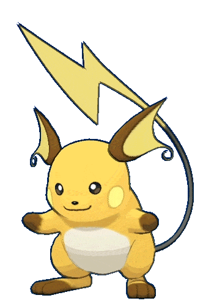

-
Bulbasaur #0001

- Grama
- Veneno
Há uma semente de planta em suas costas desde o dia que este Pókemon nasce. a semente cresce lentamente.
-
Ivysaur #0002

- Grama
- Veneno
Quando o bulbo em suas costas cresce parece perder a capacidade de ficar de pé em suas patas traseiras.
-
Venusaur #0003

- Grama
- Veneno
Sua planta floresce quando está absorvendo energia solar. Ele permanece em movimento para buscar energia solar.
-
Charmander #0004

- Fogo
Tem preferência por coisas quentes. Quando chove, diz-se que o vapor jorra pela ponta de sua cauda.
-
Charmeleon #0005

- Fogo
Tem uma natureza bárbara. Em batalha, ele chicoteia sua cauda de fogo e corta com garras afiadas.
-
Charizard #0006

- Fogo
- Voa
Ele cospe fogo que é quente o suficiente para derreter pedras. Pode causar incêndios florestais soprando chamas.
-
Squirtle #0007

- Água
Quando retrai seu longo pescoço em sua concha, esguicha água com força vigorosa.
-
Wartotle #0008

- Água
É reconhecido como um símbolo de longevidade. Se sua casca tiver algas, aquele Wartortle é muito velho.
-
Blastoise #0009

- Água
Ele esmaga seu inimigo sob seu corpo pesado para causar desmaios. Em uma pitada, ele se retirará para dentro de sua casca.
-
Caterpie #0010

- Inseto
Para proteção, ele libera um fedor horrível da antena em sua cabeça para afastar os inimigos.
-
Metapod #0011

- Inseto
Está esperando o momento de evoluir. Nesta fase, só pode endurecer, por isso permanece imóvel para evitar o ataque.
-
Butterfree #0011

- Inseto
- Voa
Em batalha, ele bate as asas em grande velocidade para liberar poeira altamente tóxica no ar.
-
Pichu #0172
- Elétrico
É inábil em armazenar energia elétrica. Qualquer tipo de choque faz com que ele descarregue energia espontaneamente.
-
Pikachu #0025

- Elétrico
Quando está com raiva, descarrega imediatamente a energia armazenada nas bolsas de suas bochechas.
-
Raichu #0026
- Elétrico
Sua cauda descarrega eletricidade no chão, protegendo-o de choques.